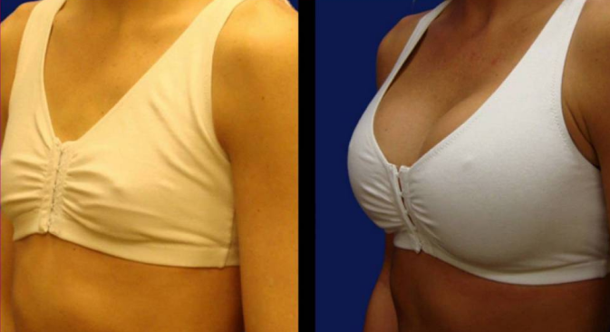
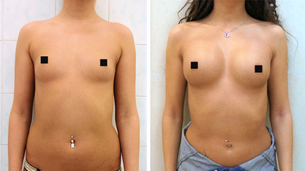
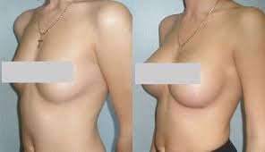

20.12.2019 20:03 2.3k
Шокирующий скандал в сфере здравоохранения: врачи обманом склоняют итальянок к пластической хирургии ради своей выгоды
Интервью с бывшим работником клиники пластической хирургии Орландо Гонсалесом
Орландо работал в известной клинике на протяжении 15 лет, и в конце концов не смог мириться с беспределом, который творится в этой сфере. Он выступил против обмана пациентов, за что был с позором уволен. Ему также запретили работать в области пластической хирургии вообще. После своего увольнения стал выступать за права пациентов пластической хирургии и согласился дать нам интервью, в котором рассказал, какую дикую тайну скрывают от нас пластические хирурги.
Сегодня мы поговорим о груди, а точнее — о пластике. В нашем обществе сложилось мнение, что у женщины обязательно должна быть красивая грудь. Существует много разных средств, но врачи утверждают, что единственное, что может улучшить грудь — пластическая хирургия. Так и есть: продающиеся в аптеках и магазинах мази и крема не дают никакого эффекта, а стоят огромных денег.
Женщины согласны идти на крайние меры и ложатся под нож. Это стоит тысячи долларов, имеет массу побочных эффектов и опасно для здоровья, но врачи не оставляют другого выхода. А он есть — и сегодня мы расскажем о средстве, которое может увеличить грудь и привести ее в норму без операций. И тут мы плавно подошли к сути скандала: врачи и аптечные сети не допускают выхода средства в продажу, ведь для них это разорительно!
Именно для того чтобы узнать подробности, мы встретились с Орландо. Не пропустите уникальный материал: он касается практически каждой женщины, которая хоть раз в жизни задумывалась о форме и размере своей груди.
— Здравствуйте, Орландо! Правда ли то, что пластические хирурги обманывают женщин, скрывая средства, которыми можно увеличить и восстановить грудь без хирургического вмешательства? Что каждая девушка может иметь привлекательную и красивую грудь, не тратя тысячи евро?
— Добрый день. Да, это правда. Это и стало причиной моего увольнения: я выступал открыто против этого и не хотел обманывать своих клиенток. Остальные врачи и компании побоялись, что я не буду держать это в секрете, и в прямом смысле слова избавились от меня: теперь я не могу работать в области пластической хирургии, но это не мешает мне поведать миру об ужасе, который происходит.
— Расскажите подробнее, как пластические хирурги обманывают людей?
— Все врачи утверждают, что увеличить грудь можно только с помощью имплантов, но это не так. Это можно сделать дома с помощью обычного крема. Только этот крем нигде нельзя было купить: врачи боролись с поставками его на полки аптек и магазинов. В результате женщины шли на операции, отдавали огромные деньги, хотя могли обойтись без этого. А хирурги набивали карманы деньгами.
— Почему средство не попадало на полки, оно опасно?
— Нет, это новейшая разработка, которая появилась лишь 2 года назад. Нет, средство полностью безопасно, все дело в нежелании терять прибыль. Как только врачи узнали, что обычный крем, который стоит в сотни раз дешевле их услуг, может лишить их клиентов, они объявили ему войну. В других странах уже давно все плавно отказываются от хирургического увеличения груди в пользу этого крема, но не у нас.
— Расскажите, пожалуйста, что это за средство? Уверены, наши читатели хотели бы о нем знать.
— Ничего невероятного тут нет: это гель для груди Upbooster, который работает не хуже, чем руки опытного пластического хирурга. Только все это выглядит естественно, без шрамов и тяжелой реабилитации. Крем разрабатывали в секретной лаборатории, так что это не обычный тюбик из магазина, а плод трудов сотен врачей.
Увеличить грудь— Разве крем может увеличить грудь?
— В том то и дело, что врачи и пластические хирурги яро утверждают, что этого сделать нельзя. Но это не так: крем должен содержать нужную концентрацию активных компонентов, которые проникают в глубокие слои кожи, и тогда он будет работать. Именно по такой системе и действует Upbooster, если говорить в двух словах, на самом деле, конечно, формула в тысячи раз сложнее.
Так что говорю еще раз: да, с помощью крема можно увеличить грудь, а врачи просто обманывают вас, чтобы вы пользовались их услугами.
— Да это просто замечательно! И UpBooster подойдет абсолютно каждой девушке?
— Так и есть, я уже это говорил, но повторю снова. UpBooster проверен лабораторией и не имеет противопоказаний. Состав полностью проверен врачами и не вызывает аллергических реакций, поэтому я так открыто рекомендую его вам. Единственная причина, по которой он еще не продается в аптеках, происки врачей, которые не хотят терять прибыль.
— Сложно ли купить крем для увеличения груди UpBooster?
— Сейчас его может купить абсолютно каждая девушка. Компания нашла, как обойти запреты врачей и аптек: она открыла официальный сайт, где продает UpBooster по цене от производителя. Вам не нужно искать его где-то: просто заполните данные и ждите доставки, она должна быть очень быстрой. Больше от вас ничего не требуется, пользуйтесь и наслаждайтесь вашей красивой формой груди.
— Спасибо огромное за ценное интервью! Хотели бы вы сказать еще что-нибудь?
Да, есть еще одна важная вещь! Хочу обратить внимание читателей на то, что купить крем UpBooster можно только на официальном сайте. В аптеках и магазинах их до сих пор не найти, а в интернете уже начали появляться подделки. Именно поэтому не ищите более низкие цены и не делайте предоплату: в этом случае вы получите копию плохого качества, которая не окажет никакого действия на вашу грудь! Уверен, после UpBooster вы измените свое отношение к новейшим медицинским разработкам и перестанете слепо верить врачам. Ведь решение проблемы часто находится гораздо ближе, чем мы думаем!
Купить UpBooster
Александра
Несколько лет мечтала увеличить грудь, чуть не пошла к врачу! Но вовремя купила UpBooster — и теперь она на 2 размера больше. Результат супер, форма стала более красивой, а сама грудь — упругой.
11.03.2019Кристина
Прочитала эта статью совершенно случайно. Никогда не верила медикам, а теперь и подавно! Уже заказала несколько упаковок UpBooster, пока он есть в продаже, а то вдруг опять запретят! Раздарила всем знакомым и подругам, пусть забудут о скальпеле, красивую грудь можно иметь и без больших жертв. А сэкономленные деньги всегда есть куда потратить!
 11.03.2019Алиса
После родов моя грудь стала похожа на мешочки, муж тоже оказался не в восторге. Была очень рада, когда увидела UpBooster — этот крем был моей последней надежной. Грудь стала такая же, как была в 20 лет! Я и не думала, что простой крем может так изменить грудь.
11.03.2019Галина
Как же долго я искала UpBooster! И вот, наконец-то, он у меня! Спасибо таким людям, как Орландо, которые не боятся вставать на сторону обычных людей, жертвуя своим заработком.
11.03.2019Дарья
Узнала про средство от своей знакомой, когда та услышала, что я хочу скорректировать грудь у хирурга. Она стала меня отговаривать и подарила UpBooster (сама бы я не стала заказывать, так как врачи убедили меня в том, что от крема форма не изменится). И как я была удивлена, когда этот обман раскрылся! Врачам можно доверять, но только нужно выбирать тех, кто на самом деле о нас заботится, а не пытается заработать побольше денег.
11.03.2019Алексия
Ну надо же, до чего дошли врачи! Вместо того чтобы помогать, они обирают! И верь им после этого. UpBooster теперь всегда на моей полочке: об увеличении груди вообще больше не думаю, хорошо, что в прошлом году не решилась на операцию!
 11.03.2019Анна
Отзывы вконец убедили меня, что крем работает, хотя я до последнего сопротивлялась. Уже заказала, надеюсь, что он улучшит форму моей груди, уж очень не хочется идти к врачам.
11.03.2019Регина
Правда можно заказывать на официальном сайте, это не мошенники?
11.03.2019Лариса
Я брала на официальном. И моя грудь стала чудесной. Обычно о таком не рассказываю, но мне очень уж обидно за женщин, которые ради такого же эффекта готовы лечь под нож. Нужно раскрыть этот обман для всех!
11.03.2019Регина
Спасибо, тогда заказываю очень помогли!
11.03.2019